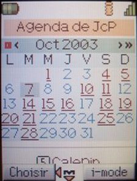
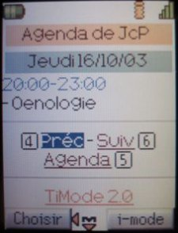
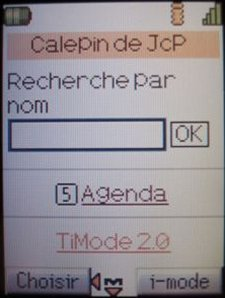
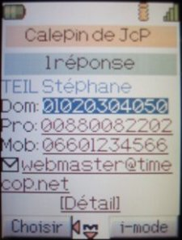

TiMode : la version i-mode™ de Phenix
Qu'est ce que c'est ?
TiMode est le fruit d'une idée soumise par Jean-Christophe PEYRARD (co-fondateur de HomeCinema-fr.com ) : créer une version compatible i-mode™ de Phenix afin de pouvoir gérer son agenda et consulter son calepin depuis son GSM.Connexion
Pour utiliser ce module vous devez obligatoirement posséder un téléphone portable compatible i-mode™ de Bouygues Telecom ou Base (Belgique) et avoir contracté un abonnement compatible auprès de ce dernier.Sécurité
Pour davantage de sécurité, vous pouvez renommer le fichier timode.php comme bon vous semble (mais pas le déplacer), les liens qu'il contient sont reconstruits à chaque fois.Fonctionnalités
Avec TiMode vous pouvez consulter votre agenda par l'intermédiaire d'un calendrier affichant un lien pour les jours contenant une note ou un anniversaire. En cliquant sur un lien, vous affichez une page détaillant le jour choisi, en précisant pour chaque note sa plage horaire et son libellé. Les liens Suiv et Prec permettent de passer directement au jour suivant ou précédent contenant une note, cela évite d'avoir à revenir au calendrier.Aperçu
Les photos suivantes ont été réalisées à partir d'un GSM Nec 22i par Jean-Christophe PEYRARD qui m'a constamment aidé dans la réalisation de ce module. Merci à lui ;)|  |  |  |  |
| Calendrier | Détail d'un jour | Recherche d'un contact | Résultat d'une recherche |